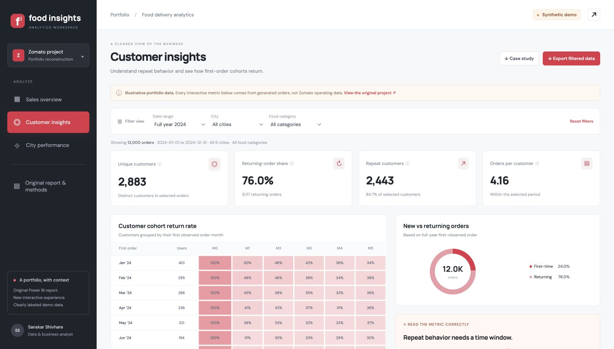
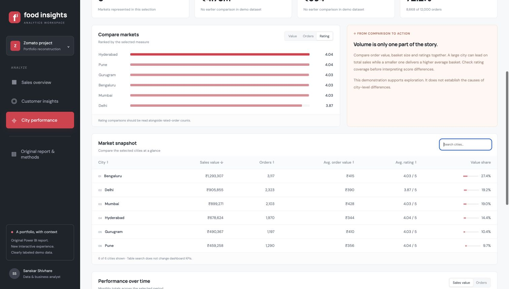

PORTFOLIO / FOOD DELIVERY ANALYTICS
From a static report
to a clearer data story.
Sales, customer behavior and city performance, explored through a reconstruction of my original Zomato Power BI portfolio project.
Synthetic portfolio data. The screenshots below use 12,000 generated orders. They are not Zomato operating results or a reproduction of the original report totals. This is an independent portfolio project.

THE BUSINESS QUESTION
Where should the team look next?
Where is order value concentrated? Which customer cohorts return? How do cities compare on order volume, basket size and ratings?
THE APPROACH
Define, compare and validate.
The original four-page Power BI report established the sales, user and city-analysis scope. I extended that scope into a browser-based dashboard with explicit metric definitions, shared filters and CSV export.
The source repository contains the original PDF, without the underlying rows or full model. The reconstruction therefore uses a reproducible synthetic dataset, with provenance shown throughout.


VALIDATION
Make the numbers inspectable.
Checks cover unique order IDs, order-value arithmetic, city and month reconciliation, filter boundaries, missing ratings and cohort censoring.
A filtered browser export was independently reconciled: 518 Q4 Bengaluru Veg orders totaling INR 217,454.49. This is a test of the synthetic fixture, not a business outcome.
DELIVERABLES
A clear handover.
The private dashboard includes sales, customer and city views, filtered CSV export and an original-report gallery. Its source pack includes the reproducible data generator, metric checks, SQL queries and starter DAX / Power BI setup notes.
The live demo remains private. This page shares screenshots and the case study. A newly authored native PBIX is not included.
Need this clarity in your reporting?
I help teams define KPIs, build dashboards and automate recurring reports.
Discuss your dashboard ↗